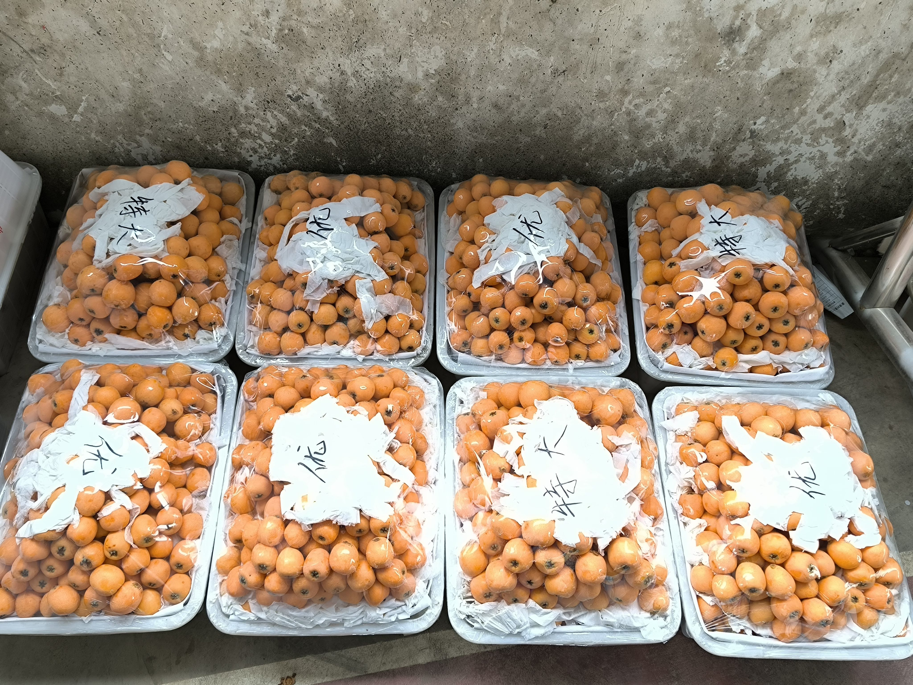
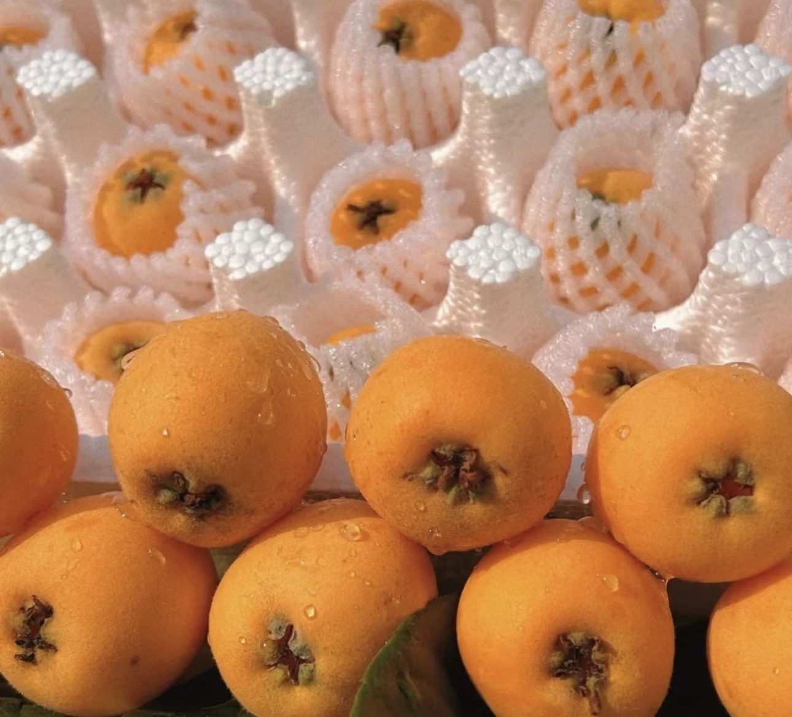
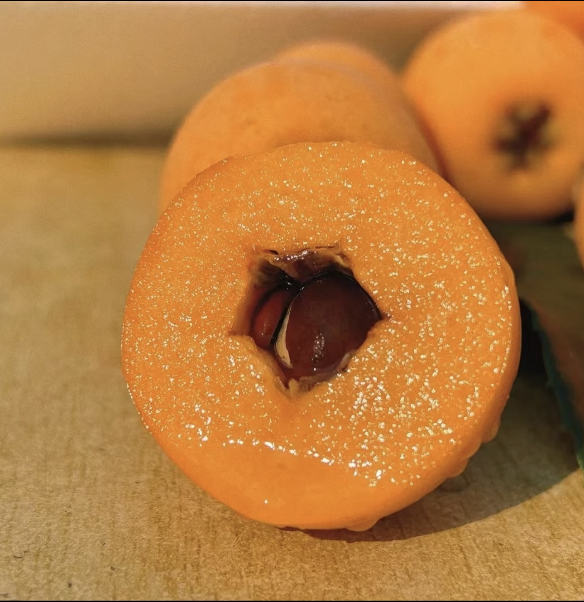

规格说明
了解果子大小与成熟月份

鲜果礼盒装
精选大果，果径匀称，礼盒包装适合走亲访友、商务馈赠，是产地伴手礼的好选择。
成熟月份：3–4月

散装果
价格亲民、量大实惠，适合家庭自购食用或采摘体验，果农现采现发。
成熟月份：3–4月

大小与分级
按果径分级挑选，个头饱满均匀；产量与当年气候相关，详情可向产地咨询。
果径以实际为准
来自高山果园的一口鲜甜

高山日照与昼夜温差，让果肉格外紧实饱满，皮薄易剥、汁水丰盈，一口咬下满是清甜。

果肉细腻，入口即化渣，甜度适中不齁，适合全家人食用，是早春时节难得的应季鲜果。
了解果子大小与成熟月份
精选大果，果径匀称，礼盒包装适合走亲访友、商务馈赠，是产地伴手礼的好选择。
成熟月份：3–4月
价格亲民、量大实惠，适合家庭自购食用或采摘体验，果农现采现发。
成熟月份：3–4月

按果径分级挑选，个头饱满均匀；产量与当年气候相关，详情可向产地咨询。
果径以实际为准
把好枇杷带回家，怎么选、怎么放都学会